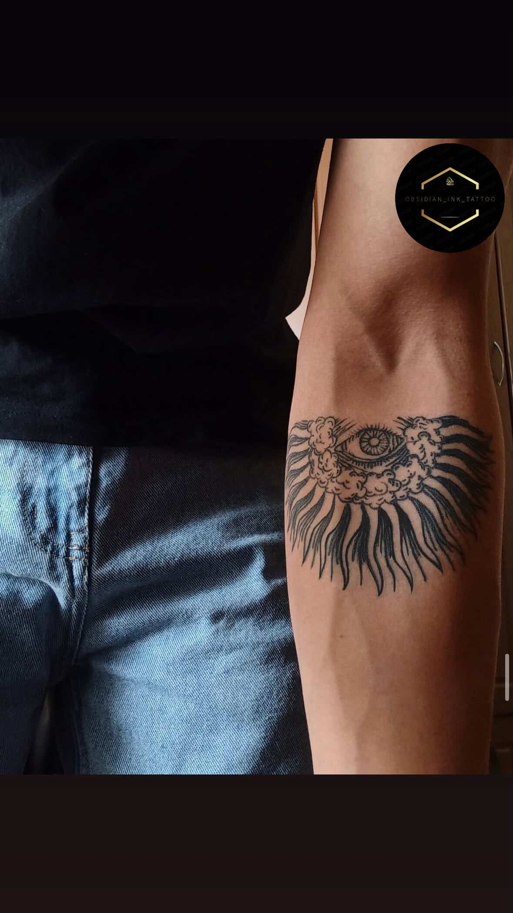
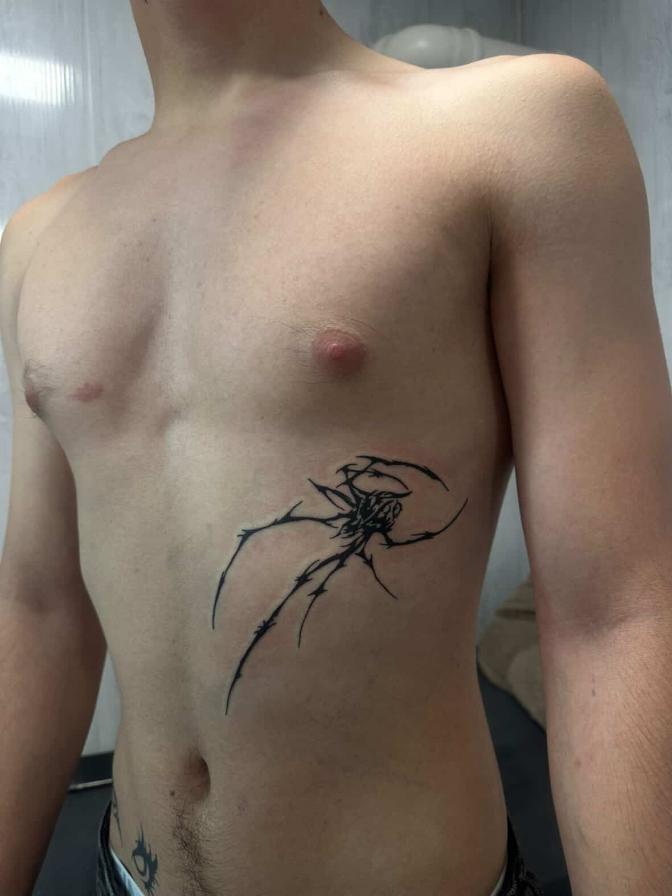
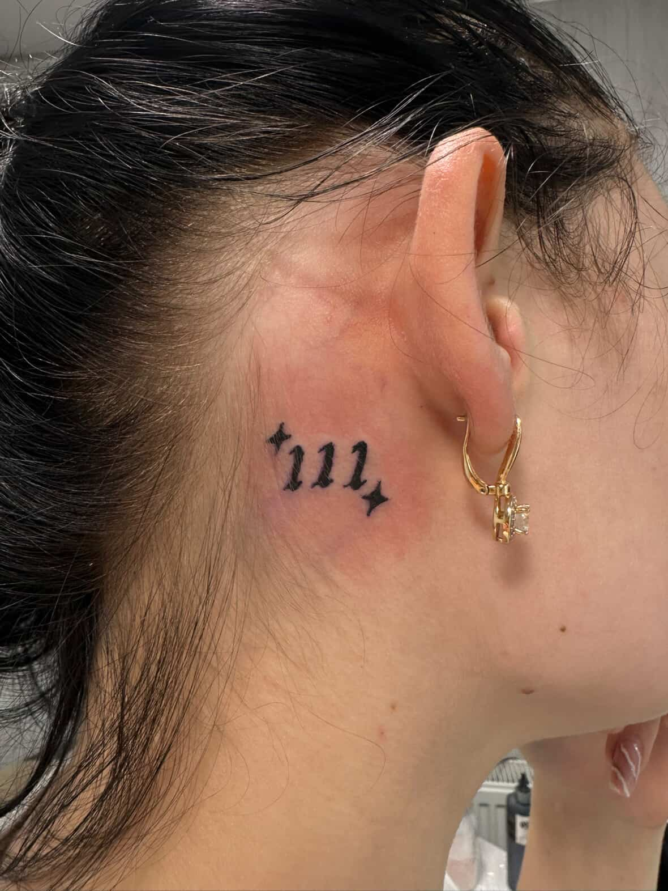

Informații utile despre tatuaje
Cum să ai grijă de tatuajul tău
După ce scoți folia spală tatuajul ușor cu:
- apă caldă;
- săpun antibacterian fără parfum;
- NU FRECA! Folosește doar mâna, nu burete sau prosop aspru;
- tamponează ușor cu un prosop curat sau lasă-l să se usuce la aer.
Hidratarea corectă
- Aplică un strat subțire de cremă sau unguent recomandat de artistul tău.
- Nu aplica prea multă cremă, deoarece poate sufoca pielea și poate întârzia vindecarea.
- Hidratează tatuajul de 2-3 ori pe zi pentru a menține pielea moale și pentru a preveni uscarea.
Rutina zilnică
- Spală tatuajul de 2 ori pe zi.
- Hidratează-l de 2–3 ori pe zi cu un strat subțire de cremă.
- Poartă haine largi pentru a evita frecarea pe tatuaj.
- Evită transpirația excesivă si antrenamentele excesive primele zile.
Cum ar trebui să arăte vindecarea
- Zilele 1-3:roșeață,sensibilitate,posibil lichid seros.
- Zilele 4-10:formează coji,poate să manînce-e normal.
- Zilele 10-20:cojile cad,pielea poate arăta mată sau uscată.
- După o lună:tatuajul ar trebui să fie vindecat complet.
Ce să eviți
- Nu scărpina sau smulge cojile -riști să pierzi cerneala.
- Nu expune tatuajul la soare direct sau la solar.
- Nu înota în piscine, lacuri sau ocean până când tatuajul nu este complet vindecat.
- Nu folosi produse dure sau parfumate pe tatuaj.
Tatuaj finalizat



Tatuaj infectat